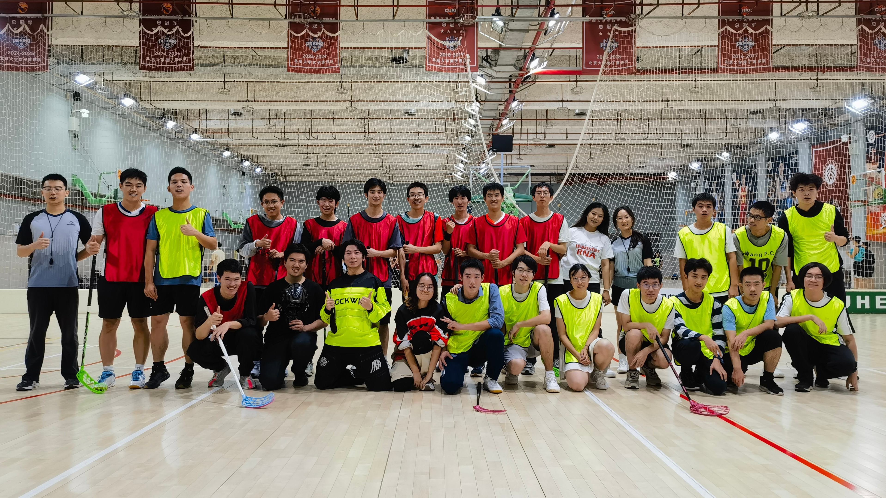

<main>
    <article class="article-container">
        
        <header class="article-header">
            <h1>小组赛第三轮 | 信工联队8：2战胜经数联队</h1>
            <div class="article-meta">
                <span>作者：xhh</span> | <span>发布于：2025年11月5日</span>
            </div>
        </header>

        <section class="article-body">
            <h2>第一节</h2>
            <p>第四分钟，邹宜轩后场拦截经数联队的传球并将球打向前场，王锐杰抢到球权后直接攻门，为信工联队首开纪录。</p>
            <p>第五分钟，张益帆在边路断球后传给前场的王羲羽，王羲羽在中场的远射攻破了信工联队的打门，双方战成1：1平。</p>
            
            <h2>第二节</h2>
            <p>第二分钟，高闻锴在前场的逼抢完成抢断后随即打门，帮助信工联队再次超出比分。</p>
            <p>第三分钟，丁宇翔后场抢断后带球推进完成一条龙破门，信工联队3：1领先。</p>
            <p>第五分钟，高闻锴在后场破坏了经数联队向前的推进，球落到张俊哲身前，张俊哲抓住空位的机会调整后打门，帮助信工联队再入一球。</p>
            <p>第七分钟，丁宇翔在前场边路抢断球权，带球内切后攻门，信工联队四球领先。</p>
            <p>第九分钟，王品澄拦截信工联队沿边路的传球，在中场转身拖射破门，经数联队扳回一球，双方战成2：5。</p>
            <p>第十分钟，徐梓越在前场底线附近抢断，球弹到门前无人防守的张俊哲身前，张俊哲反手攻门将球送入经数联队打门，信工联队再下一城。</p>
            <p>双方中场重新争球，信工联队赢得球权，高闻锴后场得球后直接远射破门，信工联队7：2领先。</p>
            
            <h2>第三节</h2>
            <p>第四分钟，德佳成后场反手传给前插的王锐杰，王锐杰得球后直接攻门，信工联队再入一球。</p>
            <p>信工联队以8：2的比分战胜经数联队获得小组第一。</p>

            <a href="images/group-w3-1.png" title="信工联队对阵经数联队" class="image-link">
                <figure class="featured-image">
                    
                </figure>
            </a>

            <h2>赛程预告</h2>
            <p>小组赛阶段全部结束，下周将进入排位赛阶段，小组第一的信工联队将对阵小组第二的一地花生，小组第三的元社联队将对阵小组第四的经数联队。</p>

        </section>

        <footer class="article-footer">
            <a href="{{'/htmls/3-association/2-rk-cup/25-rk-cup/main.html' | relative_url}}" class="btn-home">返回赛事主页</a>
        </footer>
    </article>
</main>